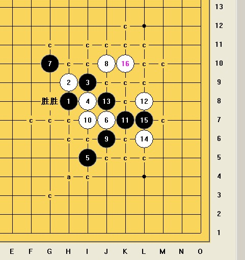

花月通寒星刀、山月刀、残月刀的最后一个15求杀
首页
妖刀天下
#1 花月通寒星刀、山月刀、残月刀的最后一个15求杀 作者：冷酒一杯 发表时间：2010-9-9 14:01:13
=======上图对应的爱五子棋谱代码如下，以便你拆解：========
h8h9i9i8i5j7g10j10j6i7k7l8j8l6l7
======================================================这个15，求白杀
［ 苯酚 于 2010-9-24 22:44:43 时花50金币砸了你一个臭鸡蛋］
［ 苯酚 于 2010-9-24 22:44:48 时花50金币砸了你一个臭鸡蛋］
［ 苯酚 于 2010-9-24 22:44:53 时花50金币砸了你一个臭鸡蛋］
［ 苯酚 于 2010-9-24 22:44:59 时花50金币砸了你一个臭鸡蛋］
#2 Re:花月通寒星刀、山月刀、残月刀的最后一个15求杀 作者：潇洒 发表时间：2010-9-9 17:51:12
=======上图对应的爱五子棋谱代码如下，以便你拆解：========
h8h9i9i8i5j7g10j10j6i7k7l8j8l6l7k10
======================================================
#3 Re:花月通寒星刀、山月刀、残月刀的最后一个15求杀 作者：冷酒一杯 发表时间：2010-9-9 18:07:20
能给得更深入些吗。这个16，我已经拆过了。没有找到合适的路。
#4 Re:花月通寒星刀、山月刀、残月刀的最后一个15求杀 作者：潇洒 发表时间：2010-9-9 20:41:41
稍微复杂点。。自己拆吧
#5 Re:花月通寒星刀、山月刀、残月刀的最后一个15求杀 作者：小帮帮 发表时间：2010-9-9 20:49:23
晕，这样的刀都已经拆完了啊，只能膜拜了！
#6 Re:花月通寒星刀、山月刀、残月刀的最后一个15求杀 作者：冷酒一杯 发表时间：2010-9-10 6:28:50

#7 Re:花月通寒星刀、山月刀、残月刀的最后一个15求杀 作者：冷酒一杯 发表时间：2010-9-10 16:59:30
潇洒同志。这个16为黑石选点，必败。［ 失落刀 于 2011-2-10 18:43:49 时奖励此帖[金币加 100 威望加1］
#8 Re:花月通寒星刀、山月刀、残月刀的最后一个15求杀 作者：wrwak 发表时间：2010-9-14 13:04:44
看看你们在软件面前多脆弱
#9 Re:花月通寒星刀、山月刀、残月刀的最后一个15求杀 作者：左伟光 发表时间：2010-9-14 22:30:01
郁闷加无聊，顶个
#10 Re:花月通寒星刀、山月刀、残月刀的最后一个15求杀 作者：建湖 发表时间：2011-2-8 22:12:10
上面的16不是正解。。。冷酒的17是必胜的。
#11 Re:花月通寒星刀、山月刀、残月刀的最后一个15求杀 作者：陈唯一 发表时间：2011-2-10 0:02:22
=======上图对应的爱五子棋谱代码如下，以便你拆解：========
h8h9i9i8i5j7g10j10j6i7k7l8j8l6l7m10
======================================================试试［ 失落刀 于 2011-2-10 18:43:19 时奖励此帖[金币加 100 威望加1］
#12 Re:花月通寒星刀、山月刀、残月刀的最后一个15求杀 作者：自来水 发表时间：2011-2-10 18:36:23
 XZ.rar
XZ.rar
楼上正解..
［ 失落刀 于 2011-2-10 18:43:06 时奖励此帖[金币加 100 威望加1］